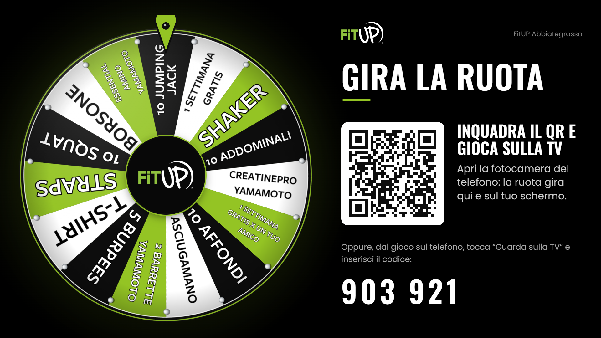
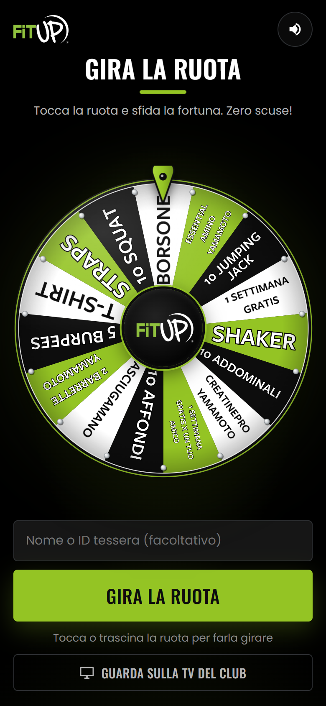
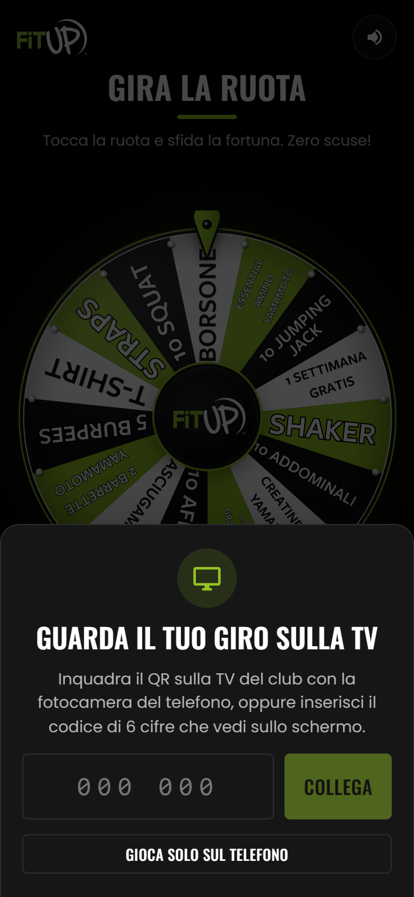
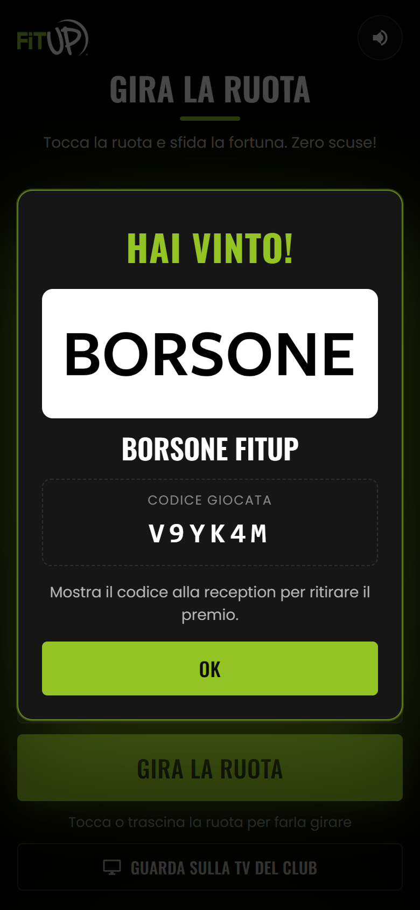
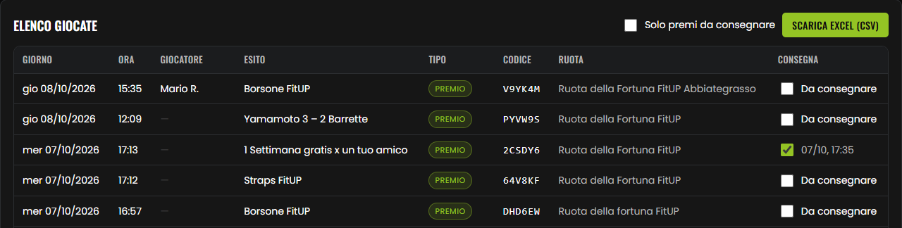

Tutto quello che serve allo staff del club: preparare la TV, far giocare i clienti, consegnare i premi.

Per il personale dei club FitUP · uso interno
1La ruota in breve
Durante l'evento del club (Open Day o Compleanno) i clienti girano la Ruota della Fortuna FitUP dal proprio telefono. La ruota gira anche sulla TV del club e si ferma su un premio o su una penitenza. Chi vince mostra un codice in reception e ritira il premio.
Prima dell'evento
Preparare la TV
Aprire il link dello schermo sul browser della TV e fare una prova. Capitolo 2
Il giorno dell'evento
Far giocare
Il cliente inquadra il QR sulla TV e gira la ruota dal telefono. Capitolo 3
Subito dopo il giro
Consegnare
Controllare il codice, consegnare il premio e segnarlo come consegnato. Capitolo 4
Cosa serve
Una TV con browser internet collegata alla rete del club (smart TV Samsung, Hisense, LG…). Se la TV non ha internet, va bene anche un tablet o un PC/notebook esposto in reception, oppure collegato alla TV con il cavo HDMI.
La connessione internet per la TV. I clienti usano i propri dati mobili (4G/5G) o il Wi-Fi del club.
Un account Google @fitup.it per la reception: serve per entrare nel backend, controllare i codici e segnare i premi consegnati.
I premi fisici della ruota pronti in reception (vedi elenco nel capitolo 4).
I link del tuo club
Ogni club ha due link e un codice. Li trovi tutti nell'elenco in fondo alla guida.
Da aprire sulla TV
fitup-tv.vercel.app/CODICE
Link corto con il codice a 6 cifre del club, da digitare col telecomando. Esempio: fitup-tv.vercel.app/440140.
Il gioco per i clienti
fitup-ruota.vercel.app/gioca/club
Non serve darlo a voce: il QR sulla TV lo apre già. Si può usare per locandine, WhatsApp o social del club.
Quando si può giocareLa ruota è aperta solo nei giorni dell'evento del club (ora italiana), dalla mezzanotte a fine giornata. Negli altri giorni il cliente vede “Non ancora disponibile” con la data dell'evento. Le ruote di Abbiategrasso e Caresanablot sono sempre aperte finché non viene fissata una data.
2Preparare la TV
Da fare qualche giorno prima dell'evento, così c'è tempo per risolvere eventuali problemi. Non servono app, account o permessi sulla TV: basta il browser.
Accendi la TV e apri il browserSi trova tra le app della smart TV (“Browser”, “Internet” o “Web”). TV senza internet? Usa un tablet o un PC (vedi riquadro sotto).
Digita il link corto del clubNella barra degli indirizzi scrivi fitup-tv.vercel.app/ seguito dal codice a 6 cifre del tuo club (elenco in fondo).
Metti a schermo interoTasto schermo intero del browser o del telecomando, se c'è. Lo schermo è già pensato in formato 16:9.
Controlla la schermataDevi vedere la ruota a sinistra e a destra il QR, il codice a 6 cifre e il nome del club in alto (es. “FitUP Seregno”).
Fai una prova con il telefonoInquadra il QR e gira la ruota (vedi riquadro sotto): deve girare anche sulla TV.
Lascia la pagina apertaDisattiva salvaschermo, spegnimento automatico e risparmio energetico della TV. La pagina si aggiorna da sola quando cambiano ruota o premi.
Lo schermo TV pronto: ruota, QR da inquadrare e codice a 6 cifre. QR e codice restano sempre visibili e spariscono solo durante il giro e la schermata del risultato.
TV senza internet: tablet o PCSe la TV non è smart o non ha internet, apri lo stesso link su un tablet (Chrome o Safari, in orizzontale) o su un PC/notebook (Chrome o Edge, tasto F11 per lo schermo intero). Puoi esporlo così in reception oppure collegare il PC alla TV con un cavo HDMI. Tieni il dispositivo in carica e disattiva il blocco schermo automatico. Funziona tutto come sulla TV: QR, codice e ruota sincronizzata.
Come fare una prova prima dell'eventoFuori dai giorni dell'evento la ruota è chiusa al pubblico. Per provarla, apri il backend fitup-ruota.vercel.app/admin con l'account Google @fitup.it sullo stesso telefono, poi inquadra il QR della TV. Comparirà la scritta “Modalità prova staff”: puoi girare quanto vuoi, le giocate non vengono registrate e il codice mostrato è “PROVA”.
3Come gioca il cliente
Il cliente usa il proprio telefono (iPhone o Android, anche non recenti). Non deve installare nulla né registrarsi.

1. Il gioco si apre dal QR. Il nome è facoltativo (nome o ID tessera).

2. Senza QR: “Guarda sulla TV del club” e si inserisce il codice a 6 cifre.

3. L'esito con il codice giocata da mostrare in reception.
I passaggi
Inquadra il QR sulla TVCon la fotocamera del telefono: si apre il gioco già collegato alla TV del club.
Scrive il nome (facoltativo)Consigliato: aiuta la reception a riconoscere chi ha vinto.
Gira la ruotaTocca “Gira la ruota” oppure trascina la ruota col dito. Gira insieme sul telefono e sulla TV.
Legge l'esitoPremio o penitenza, con il codice giocata (6 caratteri, es. K7P2QX). Lo stesso esito compare sulla TV.
Viene in receptionCon il codice sullo schermo del telefono. Consiglia di fare uno screenshot.
La TV si libera da sola5 secondi dopo l'esito il telefono viene scollegato e la TV torna pronta per il cliente successivo.
Un giocatore alla volta sulla TVMentre la ruota gira, e per qualche secondo dopo, la TV non accetta altri telefoni: chi prova vede “La TV è occupata, riprova tra qualche secondo”. Organizzate una piccola fila davanti alla TV: ogni giro dura circa 15 secondi tra rotazione ed esito.
Se la TV non si collegaIl telefono mostra “Ci dispiace, con il televisore individuato non ci è possibile collegarci per sdoppiare lo schermo. Fai qui il tuo giro di Ruota” e il cliente gioca solo sul telefono. L'estrazione e il codice valgono allo stesso modo.
4Premi, penitenze e consegna
L'esito è estratto dal sistema centrale, non dal telefono, e ogni giocata viene registrata con giorno, ora, nome ed esito. Il codice giocata permette di verificare che la vincita sia vera.
“Niente scuse: falla subito!”. Si fanno sul momento, nessun codice da controllare.
L'elenco è quello della ruota standard Promo Ottobre: fa sempre fede quello che compare sulla ruota del club.
Consegnare un premio
Guarda il codice sul telefonoSchermata “Hai vinto!” con il premio e il codice giocata.
Apri il backendfitup-ruota.vercel.app/admin → Report vincite, con l'account Google @fitup.it.
Cerca il codiceNel campo “Cerca giocatore o codice”. Verifica premio, giorno e club.
Consegna e spuntaConsegna il premio e spunta la casella nella colonna Consegna: restano salvati data, ora e chi l'ha consegnato.

Report vincite → Elenco giocate. “Solo premi da consegnare” mostra le vincite ancora da ritirare; “Scarica Excel (CSV)” esporta tutto.
AttenzioneUn codice già spuntato come consegnato non va consegnato di nuovo. Se il codice non compare nel report, o è di un altro club o di un altro giorno, non consegnare e avvisa il tuo Area manager. Il codice “PROVA” è solo per i test dello staff e non dà diritto a premi.
5Problemi e soluzioni
Sulla TV
Cosa fare
“Questo televisore non è abbastanza fluido per la ruota”
La TV è troppo lenta (sotto 12 fotogrammi al secondo). Riprova da sola ogni minuto. Prova a chiudere le altre app della TV o usa un PC/notebook collegato via HDMI. Nel frattempo i clienti possono giocare dal telefono.
“Schermo non registrato (codice …)”
Il codice nel link è sbagliato. Controlla le 6 cifre nell'elenco in fondo alla guida.
La ruota sembra un po' meno definita
È normale sulle TV meno potenti: lo schermo alleggerisce la grafica da solo per restare fluido.
Pagina bianca o che non si carica
Controlla la connessione internet della TV, poi ricarica la pagina. Se il browser della TV è molto vecchio, usa un PC via HDMI.
La TV mostra “Collegato: [nome] · gira dal telefono”
Un cliente è collegato ma non ha ancora girato. Dopo 60 secondi la TV torna libera da sola; un nuovo cliente può comunque inquadrare il QR.
La pagina della TV si è bloccata o è vecchia
Ricaricarla (tasto aggiorna del browser). Dal backend → Schermi TV si vede se la TV è in linea e quanto è fluida.
Sul telefono e in reception
Cosa fare
Il cliente vede “Non ancora disponibile”
Oggi non è il giorno dell'evento del club. La data corretta è scritta sotto il titolo del gioco.
“Codice non trovato: controlla le 6 cifre sulla TV”
Il cliente ha sbagliato il codice. Meglio inquadrare il QR.
“La TV è occupata da un altro giocatore”
Un altro cliente sta girando. Aspettare qualche secondo e riprovare.
Il QR apre il gioco ma la TV non gira
Ricaricare la pagina della TV e far inquadrare di nuovo il QR. In alternativa il cliente gioca sul telefono: l'esito vale uguale.
Il cliente ha chiuso la pagina prima di vedere il codice
Cercare nel Report vincite per nome, ora o club e verificare l'ultima giocata.
Nessun suono sul telefono
Controllare il tasto altoparlante in alto a destra nel gioco e il volume/silenzioso del telefono.
Non riesco a entrare nel backend
Serve un account Google @fitup.it: gli account personali (gmail ecc.) non sono ammessi.
6Checklist
Da stampare e tenere in reception.
Checklist
Qualche giorno prima
Trovato il codice TV e i link del club nell'elenco
Link aperto sul browser della TV, a schermo intero
Prova staff fatta: la ruota gira su telefono e TV
Salvaschermo e spegnimento automatico della TV disattivati
Accesso al backend @fitup.it verificato in reception
Checklist
Il giorno dell'evento
TV accesa sulla ruota, pagina ricaricata in mattinata
Premi pronti in reception
Backend aperto su Report vincite, filtro “Oggi”
Staff pronto a spiegare: “Inquadra il QR e gira!”
A fine giornata: tutti i premi consegnati spuntati
Novità in prova: “Gira i contatti e Gira la ruota!”Su alcuni schermi può comparire, sopra al QR, “Presenta 5 contatti e Gira la ruota in reception!”. In questo caso il QR apre il regolamento e i giri si fanno in reception: ogni 5 contatti presentati il cliente ha un giro (10 contatti = 2 giri, 15 = 3…). Per ora è attivo solo sullo schermo di prova dell'ufficio: se verrà esteso ai club riceverete indicazioni.
Per dubbi o problemi non risolti: il tuo Area manager.
AElenco link dei club
club. Link TV = da digitare sul browser della TV. Codice = quello che il cliente può inserire nel gioco. Gioco = link per i clienti, fitup-ruota.vercel.app/gioca/ seguito dal nome indicato (lo apre anche il QR).